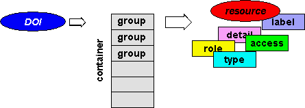
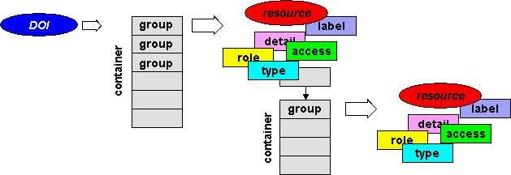
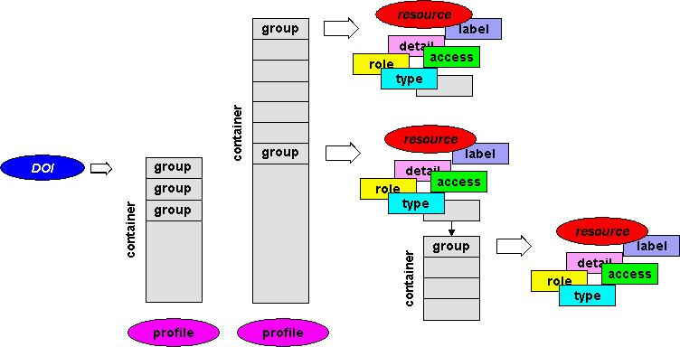

|
The following figures trace the evolution of resolving a DOI as a network identifier: "Single Resolution", "Multiple Resolution",
and now leading to what we might best term "Intelligent Resolution".
DOI Single Resolution
This is the current position with DOI - one DOI resolves to one URL. This is what is being currently implemented in CrossRef.
Essentially this provides similar functionality to a PURL - a Persistent URL.
DOI Multiple Resolution
The next step in the evolution is the "One to Many" scenario.
The demo DOIs for D-Lib magazine issues which link mirror sites
hosting D-Lib magazine can be resolved this way.

The problem with this approach is that one doesn't know what to return
to the end user - a single URL, or multiple URLs. Also one has no means of presenting this information
- URLs in their raw state are at best an unpalatable mouthful for the end user.
DOI Intelligent Resolution
This is a goal of the DOI-SDI project which is
aiming to supply a general framework for linking multiple resources. First we generalize the URL
to any arbitrary resource which may be another DObject, a general web resource, or a literal (as presented in a
URI of scheme "data:").
The resources are qualified as required by Model Properties
such as "detail" (a human readable description), "label" (a presentational element), etc.
which together make up a composite resource group.
These resource groups are then arranged within containers which have
inherent orderings of: "unordered", "sequence", or "alternatives".

Note that group members may also be containers (ie have a property "contains") so that a
complete resource hierarchy can be built up.

Each resource hierarchy is to be interpreted by a particular DOI application (eg
CrossRef). Multiple
hierarchies can be supported by adding a system property "profile" which is a DObject describing the
application profile.

See Design Principles for further info.
The underlying data model is RDF - An RDFS Schema is available.
|